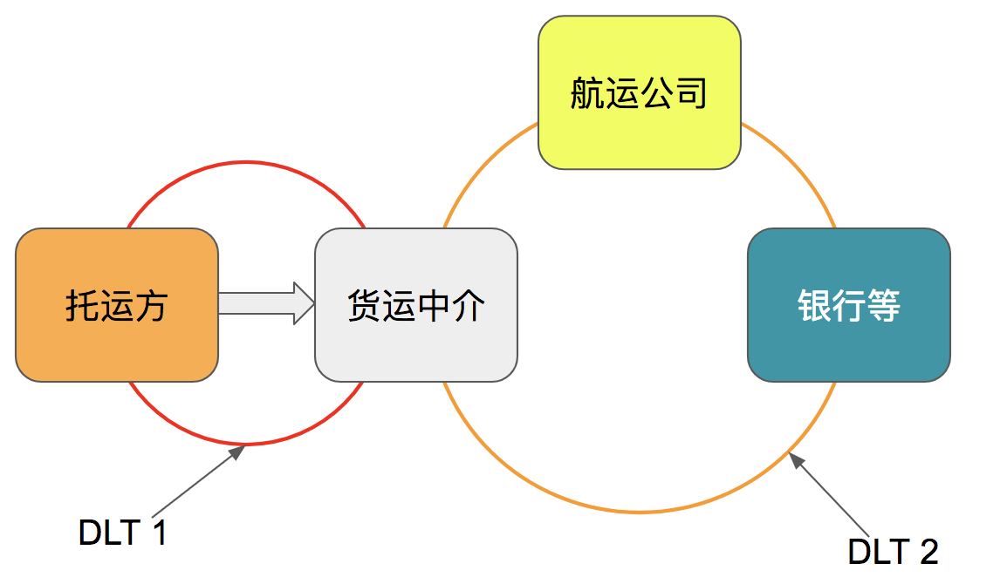
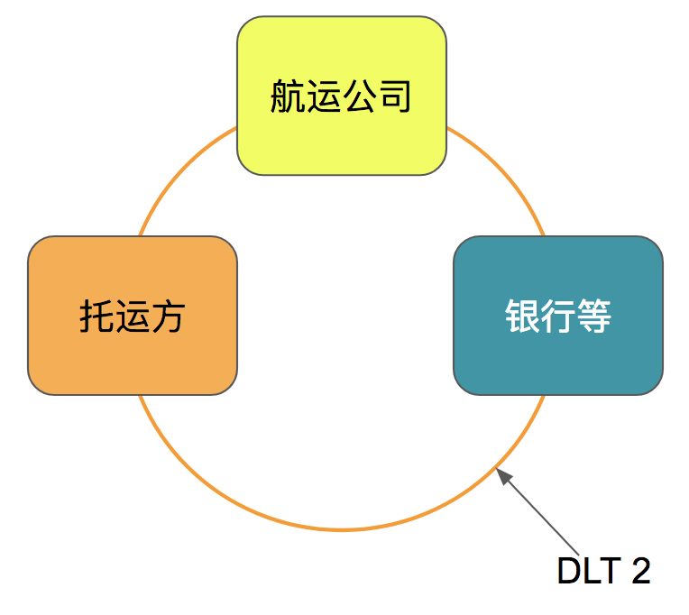
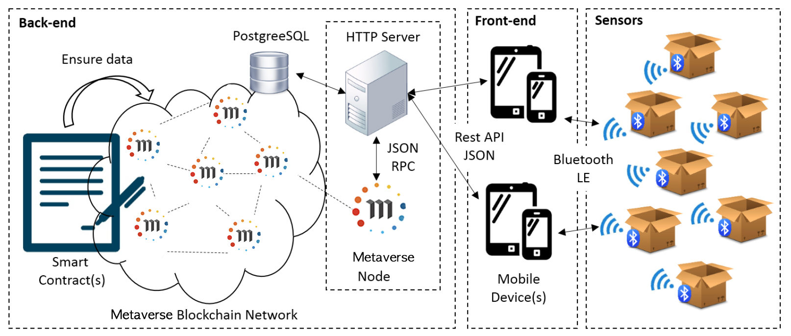

- 00 开篇词 帮你从0到1深入学习区块链技术.md.html
- 尾声篇 授人以鱼，不如授人以渔.md.html
- 新书首发《区块链第一课：深入浅出技术与应用》.md.html
- 第01讲 到底什么才是区块链？.md.html
- 第02讲 区块链到底是怎么运行的？.md.html
- 第03讲 浅说区块链共识机制.md.html
- 第04讲 区块链的应用类型.md.html
- 第05讲 如何理解数字货币？它与区块链又是什么样的关系？.md.html
- 第06讲 理解区块链之前，先上手体验一把数字货币.md.html
- 第07讲 区块链的常见误区.md.html
- 第08讲 最主流区块链项目有哪些？.md.html
- 第09讲 深入区块链技术（一）：技术基础.md.html
- 第10讲 深入区块链技术（二）：P2P网络.md.html
- 第11讲 深入区块链技术（三）：共识算法与分布式一致性算法.md.html
- 第12讲 深入区块链技术（四）：PoW共识.md.html
- 第13讲 深入区块链技术（五）：PoS共识机制.md.html
- 第14讲 深入区块链技术（六）：DPoS共识机制.md.html
- 第15讲 深入区块链技术（七）：哈希与加密算法.md.html
- 第16讲 深入区块链技术（八）： UTXO与普通账户模型.md.html
- 第17讲 去中心化与区块链交易性能.md.html
- 第18讲 智能合约与以太坊.md.html
- 第19讲 上手搭建一条自己的智能合约.md.html
- 第20讲 区块链项目详解：比特股BTS.md.html
- 第21讲 引人瞩目的区块链项目：EOS、IOTA、Cardano.md.html
- 第22讲 国内区块链项目技术一览.md.html
- 第23讲 联盟链和它的困境.md.html
- 第24讲 比特币专题（一）历史与货币.md.html
- 第25讲 比特币专题（二）：扩容之争、IFO与链上治理.md.html
- 第26讲 数字货币和数字资产.md.html
- 第27讲 弄懂数字货币交易平台（一）.md.html
- 第28讲 弄懂数字货币交易平台（二）.md.html
- 第29讲 互联网身份与区块链数字身份.md.html
- 第30讲 区块链即服务BaaS.md.html
- 第31讲 数字货币钱包服务.md.html
- 第32讲 区块链与供应链（一）.md.html
- 第33讲 区块链与供应链（二）.md.html
- 第34讲 从业区块链需要了解什么？.md.html
- 第35讲 搭建你的迷你区块链（设计篇 ）.md.html
- 第36讲 搭建你的迷你区块链（实践篇）.md.html
- 捐赠
第33讲 区块链与供应链（二）
上一篇我们一起学习了供应链的相关知识，并探讨了区块链是否可以为供应链带来新的机遇。今天，我们就从一个具体的案例出发，看看区块链到底是如何帮助供应链的。
由于区块链应用到供应链上的典型案例并不多，所以本文主要是以一种探讨的角度和你分享，希望给你提供一些思路。
跨境物流问题
上一篇我们剖析了区块链切入供应链的点是跨境物流。我们先来看看跨境物流会涉及哪些环节。
跨境物流一般包含了托运方、仓储、港口、海关、航运公司几个角色。
航运公司提供实际的运输服务，从航运公司的角度来说，一个集装箱要尽可能地装满才能获取最大收益；然而实际的货物托运需求，可能并不能装满一个集装箱。
那么，围绕货物与集装箱资源配置的货运中介就出现了，货运中介提供集装箱与货物的调度、拼凑、与上述参与方沟通协调的服务。
在实际的操作过程中，航运公司一般不与托运方直接对接，而是和货运中介对接，托运方与货运中介对接。
托运方 <--> 货运中介 <--> 航运公司
这里隐含了三个问题：
- 航运可能出现短时间大量的物流调度，同时也产生庞大的信息流，但货运中介处理能力有限，不能及时处理，这就属于订单匹配问题；
- 托运货物如果是贵重物品，托运方往往要求中介现金抵押，所以中介也要求航运公司抵押，这属于供应链金融问题；
- 三方议价会造成议价成本过高，这属于供应链流程问题。
在实际航运过程中，还会出现“丢包”的情况。换句话说就是集装箱丢了，如果你看过了《一切尽失》这部电影，就知道主角的船是被随波漂流的集装箱撞毁的。所以，即使是集装箱的供应商，也未必有能力跟踪集装箱的去向，一旦集装箱交付给下游，剩下的就只有听天由命了。
这中间其实还是会有一些信任问题，集装箱交付给下游后，如果有一种技术可以让参与方们都承认交付过程是真实无误的，那么在丢包时可以追踪到是谁在哪个环节出了问题，而不至于在追责参与方时，出现“踢皮球”的情况。
上述案例，我们可以从联盟链方案和公链方案两个角度进行剖析。下面我们先来看看联盟链方案。也就是基于分布式账本技术DLT的解决方案。
基于分布式账本技术DLT的解决方案
分布式账本技术，英文全称是Distributed Ledger Technology，缩写为DLT。DLT技术是联盟链的首选技术，在DLT技术中，关注点不是Token，而是核心业务可编程逻辑，所以DLT技术可以看成是区块链技术的一个变种。
基于DLT技术的供应链解决方案的思路，还是围绕核心企业展开，也就是前期的方案制定和执行依然是核心企业牵头，上下游企业需要成为平台的会员才可以享受服务。联盟链可以为这些平台上的会员提供一定的信任保障。
在上述航运的案例中，DLT可以围绕航运公司的订单展开，参与方都可以成为DLT的会员节点。

在DLT技术中，关注点是如何连接核心企业。DLT技术很可能首先运用到航运、货运中介和银行之间。
方案1：自建DLT物流追踪平台
自建一个物流追踪平台，核心参与方可以选择部署节点，或成为记账节点。如果DLT使用的是PBFT或PoET算法，则要求参与方节点不能联合作弊，也就是核心参与方之间必须有基础信任，否则任意参与方就算有意发起攻击，也会造成不可估量的损失。
方案2：选择第三方DLT技术平台
另外一种情况是选择第三方DLT平台，而不是自建，这方便让中小企业加入，但这里的风险也是显而易见的，由于记账节点都是第三方DLT平台，所以参与方首先要信任DLT平台。
从技术角度来看，一般DLT平台也搭建在云端，例如Azure、IBM Bluemix等，这也是为什么这些机构不遗余力地销售“区块链即服务”的概念，对所有参与方而言，记账节点是否需要自己参与运行取决于业务敏感度。
以上两个方案中，不可篡改性是由DLT技术的共识算法保证的，这里还是会退化成对记账节点的信任问题，所以DLT技术的实践形式往往是“某某区块链供应链平台”，这里的信任问题转化为对平台的信任。
除了上述结构，托运方和货运中介之间也可以直接搭建DLT技术平台，略过货运中介，这个取决于托运方的规模，如果托运方是一个大中型企业，那么也直接参与，形成如下结构。

探讨到这里，我们也可以发现DLT技术的局限性。
- 仍然围绕核心企业展开，通常只解决了单个问题，也会面临传统技术相同的问题；
- DLT价值孤岛，由于DLT平台太多，会造成数据孤岛，DLT平台之间并没有打通，面临着天花板。
但是DLT技术有如下优势：
- 能解决实际问题，可以快速落地；
- 有行业巨头的大力支持，可以和现有供应链管理工具栈无缝对接。
基于公链的解决方案
基于公链的供应链解决方案目前极少，本文我主要是提出一种思路和你一起探讨。
用公链解决供应链难题，也是从协作信任的角度出发。在上述案例中，问题主要集中在订单匹配和货物追踪上。
1.订单匹配
订单匹配其实不是区块链的长项，即使有智能合约技术，但受制于TPS，低效的计算使得海量匹配不可行，那么我们换个思路。
订单匹配本质上也是一种撮合计算，如果我们把所有的货物看成一种资产，那么以资产的体积、重量、存储要求作为条件进行最优匹配，生成最优货运策略。这个过程其实与数字货币交易所的职能十分相像。
所以我们可以把订单匹配这一步暂时放到链下，只在链上记录最优货运策略，所有人可以根据当前订单的状态验证是否为最优货运策略，如果满足预期则执行最优货运策略。
换句话说，托运方事先在链上生成订单，订单被全网的航运公司看到以后，通过自己的链下订单匹配生成最优订单策略，接着向托运方发起承运请求，托运方验证是否满足自己的期望，是的话则接受承运请求，那么这笔订单成交。
在成交的同时，托运方要求航运公司进行资产抵押，这里的抵押则不必是现金了，可以是物流行业的通用Token，这里的Token具有可编程属性，双方可在协商一致的情况，指定抵押的解锁条件。
2.货物追踪
完成订单匹配和抵押以后，进入实际承运阶段，这时候对货物的追踪则显得至关重要。传统的技术是通过中心化数据库来记录货物的位置和状态，在终端使用 IoT 传感器技术，将货物状态和位置数据上传至数据库。
这里的策略很简单，我们不变更终端部分，仅仅把中心化数据库的职责替换由公链来执行。
这里也并不是百分百的替换，而是把关键数据记录在公链上，非关键数据依然留在中心化数据库或者类DAG技术区块链账本中，主要考虑到公链是一种珍贵的共享资源，海量数据上链会形成对公链的DDoS攻击。例如货物的实时温度变化，区块链无法承载如此海量的数据，也算是在公链上的折衷方案。
这里也会涉及数字资产的概念，如果给货物一个唯一的编号，那么这个编号可以被区块链记录而形成唯一性的数字资产，类似ERC721 Token标准。
3. 可能的结构
图中是一套以元界为基础的公链方案。

在Back-end部分，元界区块链承担了货物追踪和订单撮合的职能，而所有参与方可以通过搭建属于自己的元界区块链节点服务，获得链上的订单信息。
在Front-end部分，工作人员可以通过移动设备获得订单数据，工作人员也可以像以前一样，通过IoT蓝牙传感器获得货物的数据，接着通过移动设备上传至服务器，由服务器挑选并计算后登记到元界区块链上。
两者的比较
公链方案与DLT技术相比，具备以下优势。
- 透明度高：对于可公开的信息，零售环节的普通购买者也能够通过区块浏览器查询到产品来源。
- 不可篡改性：由于公链的共识算法的不可篡改性比DTL技术更强，且参与的节点更多，所以数据的真实和可靠性更好。
- Token转移：由于区块链本身支持Token登记，所以物流提单可以做成Token，变成有价证券进行转移。
- 参与性强：任何客户、政府或是监管机构都可以参与到供应链流程整个或某个特定环节，并跟踪与浏览者相关的某些公开或非公开信息。
- 共享公链的基础设施，例如参与方不需要再搭建可视化Web服务，直接使用区块浏览器即可，货物Token也可以参与到交易平台进行二级交易。
DLT技术与公链方案相比，具备以下优势。
- 可控性高：DLT技术一般严格控制参与方，核心企业的权益可以得到保障。
- 可快速落地：方案和思路延续传统技术，实施起来方便，对参与方的认知门槛要求低。
- 匿名性较好：一般公链并没有提供清晰的权限管理和匿名技术，所以企业的数据必须脱敏才可以明文上链，而DLT技术不存在这个问题。
总结
好了，今天我和你一起探讨了区块链技术在供应链上的两种实践方案，第一种是DLT技术，第二种是围绕公链展开的方案，这两种方案各有优劣。
所以今天的问题是，你认为哪种方案会是未来的主流呢？你可以给我留言，我们一起讨论。感谢你的收听，我们下次再见。
© 2019 - 2023 Liangliang Lee. Powered by gin and hexo-theme-book.